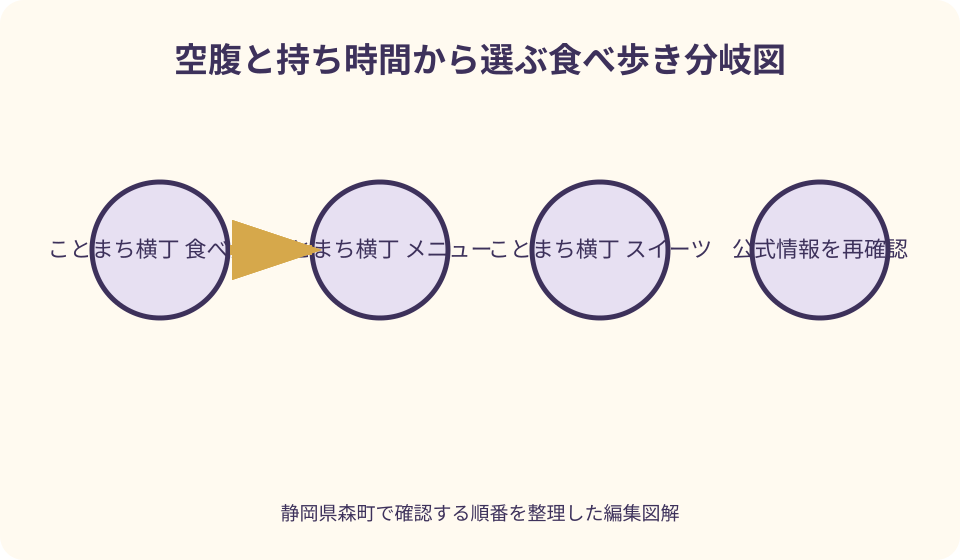
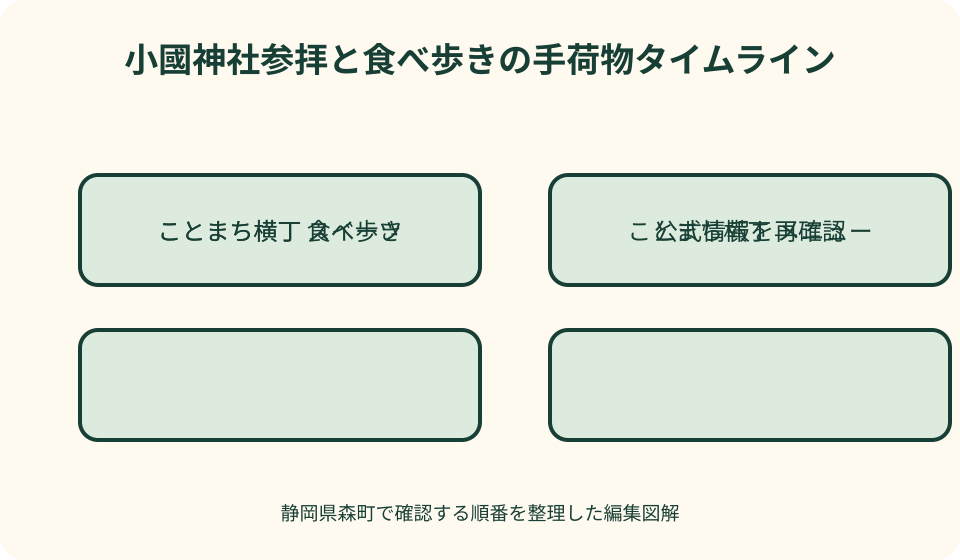

ことまち横丁｜最終確認 2026-08-10
静岡県森町・ことまち横丁の食べ歩きガイド｜食事、甘味、お茶土産の選び方
ことまち横丁の食べ歩きは、最初に当日の営業と売り切れを確認し、主食一品、すぐ食べる甘味一品、常温で持ち帰れる土産一品の順に選ぶと失敗が少なくなります。小國神社へ参拝するなら、汁やクリームがこぼれやすい品を持ったまま境内へ向かわず、参拝前は軽食まで、甘味と買い物は参拝後に回すのが実用的です。価格、季節商品、提供時間は変わり得るため、本記事で金額を固定せず、2026年8月10日に確認した公式掲載品を候補として当日の店頭表示を優先します。
食べ歩きの最初に決めること——主食、甘味、土産を一度に買わない
ことまち横丁には、てん茶麺のパスタを掲げるカフェテリア、焼きだんごやソフトクリームを扱う宮川カフェ、わらび餅とりんご飴の店、串ぬれおかきの寺子屋本舗、かりん糖と麺類を扱う店、茶葉や菓子をそろえる森の茶本舗があります。ひとまとめに「食べ歩き」と考えるより、空腹を満たす食事、すぐ食べる甘味、持ち帰る土産の三役に分けると選びやすくなります。
到着直後に目に入った甘味を重ねて買うと、昼食前に満腹になったり、参拝中に溶ける品を持ち歩いたりしがちです。先に同行者へ「昼食をここで取るか」「甘い物は一人一品か共有か」「茶葉は帰る直前に買うか」を聞き、役割ごとの上限を決めてから列に並びます。
公式サイトの店舗一覧は幅広い一方、すべての商品が毎日同じ状態で提供されるとは限りません。店頭の営業札、注文口の掲示、売り切れ表示を一周して確かめ、食べたい品の優先順位を第一候補と第二候補まで作ることが、現地で迷う時間を短くします。
食事を重視する人は主食の注文可否を最初に確認し、甘味中心の人は持ち歩き時間と気温を先に考えます。茶土産が目的なら詰め放題の実演状況と森の茶本舗の包装品を比べ、量だけでなく、帰宅後に急須で飲むか、ティーバッグを使うかまで決めると選択が具体的になります。
当日のメニューを確認する——営業時間と掲載品を同じものと思わない
ことまち横丁公式は、所在地を静岡県周智郡森町一宮3956-1とし、横丁の営業時間を9時30分から16時30分、森の茶本舗を9時から17時30分と掲載しています。これは2026年8月10日に確認した表示であり、臨時休業、繁忙日の運用、各店の注文終了時刻まで保証する数字ではありません。出発日に公式トップと新着情報を再確認してください。
メニュー名も来訪の手掛かりにはなりますが、販売確約ではありません。たとえば公式には宮川カフェの開運だんご、ことまちカフェテリアのパスタや抹茶スイーツ、寺子屋本舗の串ぬれおかきが掲載されていますが、季節味や材料、仕込み数によって選択肢が変わる前提で現地表示を見ます。
売り切れが起きたときに困らないよう、品名ではなく役割で代案を持ちます。パスタがなければ麺類または温かい軽食、冷たい甘味が難しければ焼きだんごやせんべい、当日食べる生菓子が多ければ個包装の茶菓子へ切り替える、というように目的を残したまま商品だけを替えます。
電話や問い合わせを使うなら「ウェブに載っている全商品はありますか」ではなく、訪問日、到着予定時刻、特に必要な一品を絞って尋ねます。アレルギー、原材料、持ち帰り可能時間は一般化できないため、商品名を伝えて販売者に確認し、ウェブ記事の推測で判断しないことが大切です。
食事を選ぶ——てん茶麺のパスタと温かい麺類を軸に空腹を整える
ことまちカフェテリア公式は、製茶問屋ヤマチョウが運営し、てん茶麺のパスタをおすすめ商品として案内しています。ナポリタンやツナを使った和風パスタなど全6種との掲載がありますが、訪問日に同じ構成かは注文口で確認します。甘味を何品か試したい人ほど、主食を一人前ずつ固定せず、同行者との分け方を注文前に相談すると過食を避けられます。
隠れ河原のかりん糖の公式ページには、山菜うどんとラーメンも掲げられています。名称だけで具材や調理環境を推定せず、食事制限がある場合は店頭で確認します。冷える日や参拝後に温まりたい日には、甘味を増やすより温かい一杯を主役に置く組み立ても候補になります。
昼食の時刻を正午一点にすると、参拝客が重なる日に選択肢が狭くなります。朝食を取って早めに到着するなら参拝を先に済ませて早昼へ、到着が昼前で空腹が強いなら横丁で主食を確保してから落ち着いて参拝へ、と体調を基準に順番を替えます。神前へ急ぐための無理な空腹も、食べ過ぎた直後の長い歩行も避けます。
席が埋まっている場合は、注文列と着席待ちを混同しないことが重要です。公式には合わせて100席の休憩スペースが案内されていますが、空席を保証する情報ではありません。同行者全員で入口をふさがず、係員の案内に従い、座って食べる主食が難しければ持ち帰り土産の購入を先に済ませて時間をずらします。

甘味を選ぶ——開運だんご、わらび餅、りんご飴を持ち時間で分ける
宮川カフェ公式は、みたらし、お茶餡、こしあん、くるみ味噌などの開運だんごと季節味を案内しています。掲載される味は多いため、全種類を前提にせず、当日の札から「甘い味」「塩気のある味」「季節味」の三群に分け、同行者で重複を避けると少量でも違いを比べやすくなります。
ことまちわらび餅の公式案内には、静岡抹茶ときなこのわらび餅があり、その場で食べる品と土産用が示されています。容器、保存方法、消費期限は購入時に確認し、長時間の車内放置をしません。抹茶の粉やきなこが衣服や車内へこぼれないよう、平らに置ける袋を用意することも現実的な準備です。
同店のりんご飴は、公式がカット品は約1時間で色が変わるため持ち帰りには丸ごとを勧めています。これは食べる場所を決める有用な判断材料です。すぐ休憩所で食べるならカット、参拝や移動を挟むなら丸ごとの扱いと持ち帰り条件を店頭で聞き、切った品を長く携帯しないようにします。
ソフトクリーム、かき氷、ラテなど温度変化に弱い品は、買った後に駐車場を探したり参拝列へ移ったりする計画と相性がよくありません。座る場所を確保できた時点で一品だけ注文し、食べ終えて手を清潔にしてから次の行動へ移る方が、横丁と境内の双方で落ち着いて過ごせます。
塩気のある食べ歩き——串ぬれおかきと炉せんべいは鳥居前で完結させる
寺子屋本舗は小國神社の鳥居のすぐ左にあり、公式ページでは串ぬれおかき、炉せんべい、袋入り商品を案内しています。串ぬれおかきはその場で食べる品、袋入りは持ち帰る品という違いを先に理解すると、参拝前の手荷物を増やさずに済みます。熱い状態で提供される品は受け取ってすぐ安全な場所へ移動します。
串物を手にしたまま鳥居をくぐるのではなく、指定された飲食可能な場所で食べ切り、串や包装を適切に処理してから境内へ向かいます。手水は食後の手洗い設備ではないため、たれが手についた場合に備えて小さなウェットティッシュを携帯し、境内設備へ負担を移さない準備をします。
甘味が続いたときの口直しとして塩気のある品を追加したくなりますが、一本増やす前に主食の予定を確認します。ぬれおかき、せんべい、だんご、パスタを短時間に重ねると、個々の量が小さく見えても炭水化物が集中します。家族で一つを分けられるか、個包装の土産へ回せるかを考えます。
高齢者や小さな子どもと一緒なら、熱さ、串、噛み応えを注文前に確認します。公式の商品説明だけで食べやすさを断定せず、販売者に尋ね、必要なら柔らかい別商品や着席できる食事へ替えます。食べ歩きの品数より、全員が安全に参拝まで歩ける状態を優先します。
森の茶本舗とお茶詰め放題——量、淹れ方、保存を比べて選ぶ
森の茶本舗は創業百余年と公式に紹介され、深蒸し茶、ティーバッグ、茶器、茶を使った菓子を扱っています。自宅に急須がある人には茶葉、職場や旅先で使う人にはティーバッグ、贈り先の好みが不明なら少量包装というように、飲む場面から逆算すると、売場の品数に迷いにくくなります。
真っ赤な袋のお茶の詰め放題は、遠州産の深蒸し煎茶、くき茶、ティーバッグを実演販売する企画として公式に掲載されています。すべてが同時に選べる、毎日同じ実演がある、同じ価格であるとは本記事では断定しません。訪問日の実施、対象茶、価格、支払い方法を売場で確認してから参加します。
公式は実演販売のお茶に専用保存袋を付けること、工場で密封した真空パックも用意し全国発送に対応することを案内しています。詰める楽しさを優先するか、未開封での保存や贈答の扱いやすさを優先するかで選択は変わります。大量に買う前に、開封後の保管場所と飲み切る頻度を現実的に見積もります。
詰め放題を食べ歩きの最後に回す理由は、茶葉を持ったまま混雑した飲食列を移動しないためです。袋を強く押す、食品と保冷剤の水滴が触れる、車内の高温に長く置くといった状況を避け、購入時に教わった保存方法に従います。茶葉の量だけで得を測らず、帰宅後に良い状態で飲めるところまでを買い物と考えます。

予算を組む——金額表ではなく四つの封筒で上限を決める
商品価格は改定され得るため、この記事では未確認の金額表を作りません。代わりに、主食、すぐ食べる品、持ち帰り菓子、茶葉の四区分へ予算を配ります。家族なら各人が自由に買う小額枠と、皆で分ける共通枠を分けることで、列ごとに判断が揺れるのを防げます。
最初の一周では買わず、当日の表示価格をスマートフォンのメモへ記録します。その合計が上限を超える場合、主食を削って甘味を増やすのか、食べ歩きを一品にして茶土産を残すのかを決めます。すべてを少しずつ買うより、その日の目的を一つ明確にした方が満足の理由も残ります。
決済手段も当日確認が必要です。現金だけ、特定のキャッシュレス対応、店舗ごとに会計が別といった可能性を想定し、小額の現金を準備しても、掲示を見ずに使えると決めつけません。同行者の会計を列の途中で集めるのではなく、並ぶ前に誰が何を支払うか決めます。
送料や保冷材、包装が必要な商品は、本体価格だけで比較しません。遠方へ持ち帰る茶や菓子は、発送を利用した方が参拝中の荷物を軽くできる場合があります。発送条件と到着予定は森の茶本舗へ確認し、帰りの車内スペースや公共交通の乗り換え回数も含めて総額を考えます。
保冷と持ち帰り——生もの、温かい品、乾いた土産を同じ袋に入れない
食べ歩きで最も扱いやすいのは、販売者が常温持ち帰り可と案内する個包装品です。ただし、わらび餅、りんご飴、チョコレート、茶菓子は同じ保存条件とは限りません。購入時に消費期限、保管温度、車内で持てる目安を品ごとに尋ね、回答を包装へメモします。
小さな保冷バッグを持参する場合も、何でも冷やせばよいわけではありません。茶葉は湿気やにおい移りを避けたい品であり、結露した保冷剤と同居させるべきではありません。冷蔵が必要な品と乾いた茶・せんべいを別袋にし、保冷条件は販売者の説明を優先します。
焼きたてのだんごやせんべいを土産袋へすぐ密閉すると、蒸気やたれがほかの商品へ移ることがあります。その場で食べる温かい品は休憩所で完結させ、持ち帰りには販売用に包装された別商品を選びます。食べ残しを自己判断で長時間持ち歩く計画は立てません。
公共交通で帰る人は、保冷時間だけでなく、袋井駅や遠州森駅までのバス待ちと乗り換えを含めて考えます。帰路が長い日は茶葉や個包装菓子を中心にし、生ものは現地で食べ切る方法が堅実です。どうしても持ち帰りたい品は、購入時刻を帰り際へ寄せます。
小國神社参拝の前後——飲食物を持って境内を往復しない動線
ことまち横丁は小國神社に隣接し、公式トップでも横丁の店舗と神社を一体の訪問先として案内しています。ただし、近いからこそ飲食の途中で境内へ入る動きは避けたいところです。参拝前に空腹を整えるなら軽食を食べ切り、手と口元を整えてから鳥居へ向かいます。
朝の到着でまだ食事店の準備中なら、先に小國神社へ参拝し、横丁の営業開始後に戻る順番が自然です。反対に、昼過ぎ到着で売り切れが心配なら、横丁を一周して在庫と注文終了の見込みを確かめ、必要な主食だけを済ませてから参拝します。営業時刻を参拝時刻より上位に置くのではなく、体調と当日の案内を合わせて調整します。
参拝後は、甘味を一品選び、最後に茶と持ち帰り菓子を買う流れにすると、溶ける品と土産を長く携帯せずに済みます。車へ荷物を置きに戻る場合も、炎天下の車内へ食品を残さないようにします。駐車場所と鳥居の位置を到着時に確認し、買い物袋を持って迷わないようにします。
小國神社や横丁が混む祭事、初詣、紅葉期は、徒歩距離が短くても列と人流で時間が伸びます。参拝と飲食を一時間に詰め込まず、帰りのバスや運転交代時刻から逆算します。横丁の一品を諦めても参拝の所作を急がないことが、二つの場所を尊重する回り方です。
混雑、売り切れ、休業時の対案——目的を一段ずつ縮める
第一候補が売り切れたら、同じ味を探し回るより、主食、甘味、土産のどの目的が未達かを確認します。主食なら別の麺類、甘味なら焼きだんごから個包装の茶菓子、土産なら詰め放題から密封茶へ替えます。役割を維持して形式を変えると、判断が早くなります。
注文列が長いときは、全員で同じ列に並ばず、係員の指示を妨げない場所で待ち合わせを決めます。ただし、別々の列へ同時に並んで後から順番を入れ替える行為は避けます。高齢者や子どもがいる場合は休憩所を確認し、空席がなければ車や別の安全な場所へ移る判断も必要です。
横丁全体の利用が難しい場合、食べ歩きを無理に成立させず、小國神社参拝だけを丁寧に行い、森町中心部の飲食店へ移る代案を持ちます。町公式の観光案内は森町観光協会の連絡先と町内の寺社を巡るモデルコースを示しているため、一宮だけで一日の成否を決めず、町内周遊へ切り替えられます。
悪天候では傘と食べ物を同時に持たず、着席できる場所が確保できなければ持ち帰り品だけに絞ります。猛暑日は冷たい品の列へ長く立つより、水分と休息を先に確保します。商品を一つ多く食べることより、体調を崩さず帰宅できることを結論に置きます。
良い点——森町のお茶を飲食と持ち帰りの両方から選べる
ことまち横丁の良い点は、お茶が茶葉売場だけに閉じず、てん茶麺、抹茶の甘味、茶餡、ラテ、茶菓子という異なる形で並ぶことです。茶を普段淹れない人は甘味から、日常的に飲む人は深蒸し茶から入り、同じ地域産業へ別の入口を持てます。
森町公式は、遠州の小京都を支える伝統的な産業や文化の一つとしてお茶を挙げています。横丁で茶を選ぶ行為を単なる買い物で終わらせず、山々と太田川に囲まれた町の産業を持ち帰ることと捉えると、商品名の多さにも意味が見えてきます。
その場で食べる店と、包装品を選ぶ店、休憩スペースが近いことも、家族の希望が分かれる日に使いやすい特徴です。全員が同じ品を食べる必要はなく、一人は温かい軽食、一人は抹茶甘味、一人は茶葉を選び、決めた時刻に合流できます。
一方で選択肢の多さは、事前に上限を決めなければ買い過ぎにつながります。良い点を生かす鍵は、全店制覇ではなく、今日食べる一品と帰宅後に楽しむ一品を分けることです。食べ歩きの記憶と土産の時間が競合せず、二度楽しめます。
注文したい点——更新日、売り切れ、持ち帰り条件が一画面で分かる案内
利用者として注文したい点は、各店舗の当日営業、注文終了、売り切れ、季節メニューを一つの画面で確認できる案内です。公式サイトには多くの商品写真と名称がありますが、来訪当日の提供状況を事前に見分けるには、更新日時と現在の取扱いを明確に分けた表示が役立ちます。
価格を掲載する場合は、税込表示、更新日、サイズ、持ち帰り可否をそろえると、家族の予算を組みやすくなります。とりわけ詰め放題は、対象茶、袋の扱い、実演時間、密封品との違いが同じ場所にまとまれば、量だけを見て現地で迷うことが減ります。
食品ごとの保存案内も、冷蔵、常温、購入後すぐ、発送相談可など簡潔な記号があると公共交通利用者に親切です。ただし、記号だけで安全を保証するのではなく、最終的には店頭で個別商品を確認する導線を残す必要があります。
混雑時には、注文列、受取列、休憩所の入口がどこかを示す現地掲示が重要です。商品紹介を増やすだけでなく、鳥居へ向かう人と飲食する人が交差しにくい歩き方を示すことで、横丁と小國神社の近さがより安心して生かされます。
対案・結論——主食一、甘味一、土産一を基準に当日組み替える
初訪問の基本形は、到着後に一周して営業確認、必要なら主食を一品、小國神社へ参拝、戻って甘味を一品、最後に茶または個包装土産を一品です。この順番なら、参拝中に温度変化する食品を抱えず、茶葉を混雑した飲食列へ持ち込まずに済みます。
朝に強い人は参拝を先に、空腹や服薬の都合がある人は食事を先にします。正解を時刻だけで固定せず、同行者の体調、当日の営業、バスの時刻、天候を見て組み替えます。公式掲載の営業時間は出発前に再確認し、各店の注文終了は現地で聞きます。
混雑して三品を選べない日は、現地でしか食べにくい一品を優先し、包装品は発送や次回訪問へ回します。売り切れなら同じ役割の商品へ替え、休業なら小國神社参拝と森町中心部の食事へ切り替えます。予定を縮めることは失敗ではなく、町内で時間を使い直す選択です。
価格、味、提供数について未確認の断定をせず、公式サイトは候補を知る資料、店頭表示は当日の判断資料として使い分けます。食べ歩きの成果を品数で測らず、森町のお茶を一つ理解し、境内を清潔な手で歩き、無理なく帰宅できれば、行程として十分に成立します。
大石の視点——食べた数ではなく、選ばなかった理由も記録する
私が現地案内を組み立てるときは、店名を多く並べるより、判断の順番を残します。今日は参拝を先にした、保冷時間が長いため生菓子をやめた、詰め放題より密封茶を選んだ、という理由があれば、次回は別の条件で迷わず選び直せます。
写真を撮るなら商品だけでなく、購入時に許可される範囲で包装の保存表示や店頭の営業案内も記録します。帰宅後に情報を見直す際、味の印象を経験していない人へ普遍化せず、公式に書かれた事実、当日の掲示、自分たちの選択を分けて残します。
遠州の小京都という呼び名は、見栄えのよい甘味だけを指すものではありません。森町公式が示すように、自然、寺社、町並み、茶を含む産業と文化が重なった呼称です。横丁では一つの茶商品を選び、その背景を知ってから小國神社へ歩くことで、短い距離にも地域のつながりが生まれます。
次に訪れる人へ勧めるなら、ランキングではなく条件を伝えます。温かい食事が必要か、甘味をすぐ食べられるか、茶葉を帰宅後に淹れられるか、参拝前後のどちらに時間があるか。その四問へ答えれば、当日メニューが変わっても、自分に合う一品を選べます。
公式情報・確認先
掲載内容は次の一次情報を基礎に整理しました。営業、料金、催し、交通は変わるため、出発前または手続き前にリンク先で最新情報を確認してください。
- 小國ことまち横丁 公式トップ（ことまち横丁、2026-08-10確認）
- 森の茶本舗（ことまち横丁、2026-08-10確認）
- 真っ赤な袋のお茶の詰め放題（ことまち横丁、2026-08-10確認）
- 宮川カフェ（ことまち横丁、2026-08-10確認）
- ことまちわらび餅（ことまち横丁、2026-08-10確認）
- ことまちカフェテリア（ことまち横丁、2026-08-10確認）
- 寺子屋本舗（ことまち横丁、2026-08-10確認）
- 隠れ河原のかりん糖（ことまち横丁、2026-08-10確認）
- 休憩所（ことまち横丁、2026-08-10確認）
- 静岡県森町 観光案内・地図（静岡県森町、2026-08-10確認）
- 静岡県森町 遠州の小京都まちづくり（静岡県森町、2026-08-10確認）
- 小國神社 公式サイト（小國神社、2026-08-10確認）